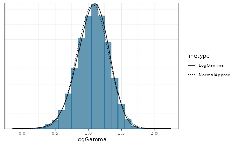

Meta-Analytic-Predictive Priors for Variances
Sebastian Weber
2023-08-22
Source:vignettes/variances_MAP.Rmd
variances_MAP.RmdApplying the meta-analytic-predictive (MAP) prior approach to historical data on variances has been suggested in [1]. The utility is a better informed planning of future trials which use a normal endpoint. For these reliable information on the sampling standard deviation is crucial for planning the trial.
Under a normal sampling distribution the (standard) unbiased variance estimator for a sample \(y_j\) of size \(n_j\) is
\[ s^2_j = \frac{1}{n_j-1} \sum_{i=1}^{n_j} (y_{j,i} - \bar{y}_j)^2, \]
which follows a \(\chi^2_\nu\) distribution with \(\nu_j = n_j-1\) degrees of freedom. The \(\chi^2_\nu\) can be rewritten as a \(\Gamma\) distribution
\[ s^2_j|\nu_j,\sigma_j \sim \Gamma(\nu_j/2, \nu_j/(2\,\sigma^2_j)) \] \[ \Leftrightarrow s^2_j \, \nu_j /2 |\nu_j,\sigma_j \sim \Gamma(\nu_j/2, 1/\sigma^2_j), \]
where \(\sigma_j\) is the (unknown) sampling standard deviation for the data \(y_j\).
While this is not directly supported in RBesT, a normal
approximation of the \(\log\)
transformed \(\Gamma\) variate can be
applied. When \(\log\) transforming a
\(\Gamma(\alpha,\beta)\) variate it’s
moment and variance can analytically be shown to be (see [2], for
example)
\[ E[\log(X)] = \psi(\alpha) - \log(\beta)\] \[ Var[\log(X)] = \psi^{(1)}(\alpha).\]
Here, \(\psi(x)\) is the digamma function and \(\psi^{(1)}(x)\) is the polygamma function of order 1 (second derivative of the \(\log\) of the \(\Gamma\) function).
Thus, by approximating the \(\log\)
transformed \(\Gamma\) distribution
with a normal approximation, we can apply gMAP as if we
were using a normal endpoint. Specifically, we apply the transform \(Y_j=\log(s^2_j \, \nu_j /2) -
\psi(\nu_j/2)\) such that the meta-analytic model directly
considers \(\log \sigma_j\) as random
variate. The normal approximation becomes more accurate, the larger the
degrees of freedom are. The section at the bottom of this vignette
discusses this approximation accuracy and concludes that independent of
the true \(\sigma\) value for 10
observations the approxmation is useful and a very good one for more
than 20 observations.
In the following we reanalyze the main example of reference [1] which is shown in table 2:
| study | sd | df |
|---|---|---|
| 1 | 12.11 | 597 |
| 2 | 10.97 | 60 |
| 3 | 10.94 | 548 |
| 4 | 9.41 | 307 |
| 5 | 10.97 | 906 |
| 6 | 10.95 | 903 |
Using the above equations (and using plug-in estimates for \(\sigma_j\)) this translates into an approximate normal distribution for the \(\log\) variance as:
hdata <- mutate(hdata,
alpha=df/2,
beta=alpha/sd^2,
logvar_mean=log(sd^2 * alpha) - digamma(alpha),
logvar_var=psigamma(alpha,1))| study | sd | df | alpha | beta | logvar_mean | logvar_var |
|---|---|---|---|---|---|---|
| 1 | 12.11 | 597 | 298.5 | 2.0354 | 4.9897 | 0.0034 |
| 2 | 10.97 | 60 | 30.0 | 0.2493 | 4.8071 | 0.0339 |
| 3 | 10.94 | 548 | 274.0 | 2.2894 | 4.7867 | 0.0037 |
| 4 | 9.41 | 307 | 153.5 | 1.7335 | 4.4868 | 0.0065 |
| 5 | 10.97 | 906 | 453.0 | 3.7643 | 4.7914 | 0.0022 |
| 6 | 10.95 | 903 | 451.5 | 3.7656 | 4.7878 | 0.0022 |
In order to run the MAP analysis a prior for the heterogeniety
parameter \(\tau\) and the intercept
\(\beta\) is needed. In reference [3]
it is demonstrated that the (approximate) sampling standard deviation of
the \(\log\) variance is \(\sqrt{2}\). Thus, a
HalfNormal(0,sqrt(2)/2) is a very conservative choice for
the between-study heterogeniety parameter. A less conservative choice is
HalfNormal(0,sqrt(2)/4), which gives very similar results
in this case. For the intercept \(\beta\) a very wide prior is used with a
standard deviation of \(100\) which is
in line with reference [1]:
map_mc <- gMAP(cbind(logvar_mean, sqrt(logvar_var)) ~ 1 | study, data=hdata,
tau.dist="HalfNormal", tau.prior=sqrt(2)/2,
beta.prior=cbind(4.8, 100))
map_mc## Generalized Meta Analytic Predictive Prior Analysis
##
## Call: gMAP(formula = cbind(logvar_mean, sqrt(logvar_var)) ~ 1 | study,
## data = hdata, tau.dist = "HalfNormal", tau.prior = sqrt(2)/2,
## beta.prior = cbind(4.8, 100))
##
## Exchangeability tau strata: 1
## Prediction tau stratum : 1
## Maximal Rhat : 1
##
## Between-trial heterogeneity of tau prediction stratum
## mean sd 2.5% 50% 97.5%
## 0.2050 0.1040 0.0781 0.1830 0.4720
##
## MAP Prior MCMC sample
## mean sd 2.5% 50% 97.5%
## 4.780 0.256 4.240 4.780 5.270
summary(map_mc)## Heterogeneity parameter tau per stratum:
## mean sd 2.5% 50% 97.5%
## tau[1] 0.205 0.104 0.0781 0.183 0.472
##
## Regression coefficients:
## mean sd 2.5% 50% 97.5%
## (Intercept) 4.78 0.101 4.57 4.78 4.97
##
## Mean estimate MCMC sample:
## mean sd 2.5% 50% 97.5%
## theta_resp 4.78 0.101 4.57 4.78 4.97
##
## MAP Prior MCMC sample:
## mean sd 2.5% 50% 97.5%
## theta_resp_pred 4.78 0.256 4.24 4.78 5.27
plot(map_mc)$forest_model
In reference [1] the correct \(\Gamma\) likelihood is used in contrast to the approximate normal approach above. Still, the results match very close, even for the outer quantiles.
MAP prior for the sampling standard deviation
While the MAP analysis is performed for the \(\log\) variance, we are actually interested
in the MAP of the respective sampling standard deviation. Since the
sampling standard deviation is a strictly positive quantity it is
suitable to approximate the MCMC posterior of the MAP prior using a
mixture of \(\Gamma\) variates, which
can be done using RBesT as:
map_mc_post <- as.matrix(map_mc)
sd_trans <- compose(sqrt, exp)
mcmc_intervals(map_mc_post, regex_pars="theta", transformation=sd_trans)
map_sigma_mc <- sd_trans(map_mc_post[,c("theta_pred")])
map_sigma <- automixfit(map_sigma_mc, type="gamma")
plot(map_sigma)$mix
## 95% interval MAP for the sampling standard deviation
summary(map_sigma)## mean sd 2.5% 50.0% 97.5%
## 10.980236 1.401089 8.283373 10.921528 14.063679Normal approximation of a \(\log\Gamma\) variate
For a \(\Gamma(y|\alpha, \beta)\) variate \(y\), which is \(\log\) transformed, \(z = \log(y)\), we have by the law of transformations for univariate densities:
\[ y|\alpha,\beta \sim \Gamma(\alpha,\beta) \] \[ p(z) = p(y) \, y = p(\exp(z)) \, \exp(z) \] \[ z|\alpha,\beta \sim \log\Gamma(\alpha,\beta)\] \[\Leftrightarrow \exp(z)|\alpha,\beta \sim \Gamma(\alpha,\beta) \, \exp(z) \]
The first and second moment of \(z\) is then \[ E[z] = \psi(\alpha) - \log(\beta)\] \[ Var[z] = \psi^{(1)}(\alpha).\]
A short simulation demonstrates the above results:
gamma_dist <- mixgamma(c(1, 18, 6))
## logGamma density
dlogGamma <- function(z, a, b, log=FALSE) {
n <- exp(z)
if(!log) {
return(dgamma(n, a, b) * n)
} else {
return(dgamma(n, a, b, log=TRUE) + z)
}
}
a <- gamma_dist[2,1]
b <- gamma_dist[3,1]
m <- digamma(a) - log(b)
v <- psigamma(a,1)
## compare simulated histogram of log transformed Gamma variates to
## analytic density and approximate normal
sim <- rmix(gamma_dist, 1E5)
mcmc_hist(data.frame(logGamma=log(sim)), freq=FALSE, binwidth=0.1) +
overlay_function(fun=dlogGamma, args=list(a=a,b=b), aes(linetype="LogGamma")) +
overlay_function(fun=dnorm, args=list(mean=m, sd=sqrt(v)), aes(linetype="NormalApprox"))
We see that for \(\nu=9\) only, the approximation with a normal density is reasonable. However, by comparing as a function of \(\nu\) the \(2.5\)%, \(50\)% and \(97.5\)% quantiles of the correct distribution with the respective approximate distribution we can assess the adequatness of the approximation. The respective R code is accessible via the vignette overview page while here the graphical result is presented for two different \(\sigma\) values:

Acknowledgements
Many thanks to Ping Chen and Simon Wandel for pointing out an issue with the transformation as used earlier in this vignette.
References
[1] Schmidli, H., et. al, Comp. Stat. and Data Analysis, 2017,
113:100-110
[2] https://en.wikipedia.org/wiki/Gamma_distribution#Logarithmic_expectation_and_variance
[3] Gelman A, et. al, Bayesian Data Analysis. Third edit., 2014.,
Chapter 4, p. 84
R Session Info
## R version 4.3.1 (2023-06-16)
## Platform: x86_64-pc-linux-gnu (64-bit)
## Running under: Ubuntu 22.04.3 LTS
##
## Matrix products: default
## BLAS: /usr/lib/x86_64-linux-gnu/openblas-pthread/libblas.so.3
## LAPACK: /usr/lib/x86_64-linux-gnu/openblas-pthread/libopenblasp-r0.3.20.so; LAPACK version 3.10.0
##
## locale:
## [1] LC_CTYPE=C.UTF-8 LC_NUMERIC=C LC_TIME=C.UTF-8
## [4] LC_COLLATE=C.UTF-8 LC_MONETARY=C.UTF-8 LC_MESSAGES=C.UTF-8
## [7] LC_PAPER=C.UTF-8 LC_NAME=C LC_ADDRESS=C
## [10] LC_TELEPHONE=C LC_MEASUREMENT=C.UTF-8 LC_IDENTIFICATION=C
##
## time zone: UTC
## tzcode source: system (glibc)
##
## attached base packages:
## [1] stats graphics grDevices utils datasets methods base
##
## other attached packages:
## [1] bayesplot_1.10.0 purrr_1.0.2 dplyr_1.1.2 ggplot2_3.4.3
## [5] knitr_1.43 RBesT_1.7-2
##
## loaded via a namespace (and not attached):
## [1] tensorA_0.36.2 gtable_0.3.3 xfun_0.40
## [4] bslib_0.5.1 processx_3.8.2 inline_0.3.19
## [7] callr_3.7.3 vctrs_0.6.3 tools_4.3.1
## [10] ps_1.7.5 generics_0.1.3 stats4_4.3.1
## [13] parallel_4.3.1 tibble_3.2.1 fansi_1.0.4
## [16] highr_0.10 pkgconfig_2.0.3 checkmate_2.2.0
## [19] desc_1.4.2 distributional_0.3.2 RcppParallel_5.1.7
## [22] assertthat_0.2.1 lifecycle_1.0.3 farver_2.1.1
## [25] compiler_4.3.1 stringr_1.5.0 textshaping_0.3.6
## [28] munsell_0.5.0 codetools_0.2-19 htmltools_0.5.6
## [31] sass_0.4.7 yaml_2.3.7 Formula_1.2-5
## [34] pillar_1.9.0 pkgdown_2.0.7 crayon_1.5.2
## [37] jquerylib_0.1.4 cachem_1.0.8 StanHeaders_2.26.27
## [40] abind_1.4-5 posterior_1.4.1 rstan_2.21.8
## [43] tidyselect_1.2.0 digest_0.6.33 mvtnorm_1.2-2
## [46] stringi_1.7.12 reshape2_1.4.4 labeling_0.4.2
## [49] rprojroot_2.0.3 fastmap_1.1.1 grid_4.3.1
## [52] colorspace_2.1-0 cli_3.6.1 magrittr_2.0.3
## [55] loo_2.6.0 pkgbuild_1.4.2 utf8_1.2.3
## [58] withr_2.5.0 prettyunits_1.1.1 scales_1.2.1
## [61] backports_1.4.1 rmarkdown_2.24 matrixStats_1.0.0
## [64] gridExtra_2.3 ragg_1.2.5 memoise_2.0.1
## [67] evaluate_0.21 rstantools_2.3.1.1 rlang_1.1.1
## [70] Rcpp_1.0.11 glue_1.6.2 jsonlite_1.8.7
## [73] plyr_1.8.8 R6_2.5.1 systemfonts_1.0.4
## [76] fs_1.6.3